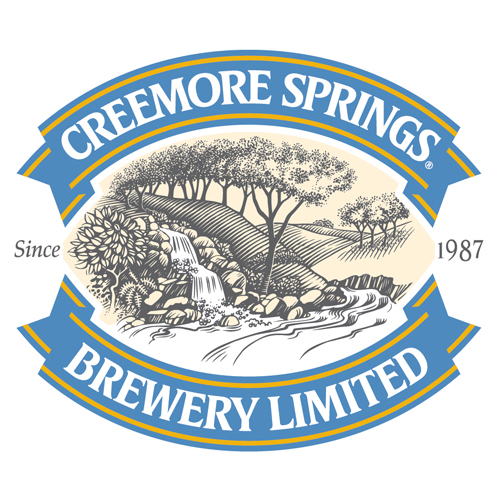
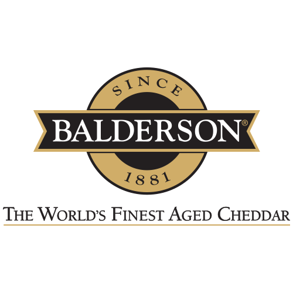

When
Friday, Feb 28th, 2014 from 5:30pm to 10pm
Sign-up Now
Must be 19+ years of age to attend
Where
Roy Thomson Hall
Friday, Feb 28th, 2014 from 5:30pm to 10pm
Roy Thomson Hall
Indulge in an array of grilled cheese sandwiches with a gourmet twist on this classic dish. And if that's not all, there'll be beer and homemade soup, perfect for winter festivities.
Sign up now to receive an invitation when tickets go on sale - it's going to be epic!
$45 + HST per person
Includes all-you-can-eat grilled cheese sandwiches, gourmet soup, and 3 beer samples.
Sign-up NowMust be 19+ years of age to attend.
Joylister Pourtine Fest from InfinityList on Vimeo.
We've curated Toronto's Top Grilled Cheese Masters to bring to you a feast for the eyes, mouth, and stomach on this classic comfort dish prepared with fresh, gourmet ingredients. You'll be able to sample a variety of grilled cheese sandwiches till your heart's content, all under one roof.
Enrich your grilled cheese experience with gourmet soup pairings. Our vendors have lovingly prepared authentic, hand-crafted fresh soups to bring a touch of comfort and warmth to the winter festivities.
Quench your thirst with locally-brewed perfection. Sip and savour the refreshing taste of Creemore Springs Premium Lager, made with the finest malted barley, pure spring water, and imported hops. Let the good times roll!
 Melt Grilled Cheese
Melt Grilled Cheese Cut the Cheese
Cut the CheeseTickets cost $45 +HST per person and can only be purchased online in advance. Tickets will not be sold at the door.
There is a limit of 8 tickets per transaction. Once tickets are sold out (and believe me, they will be fast), that's it!
Each ticket allows you access to all-you-can-eat grilled cheese sandwiches and gourmet soup from participating vendors, while quantities last.
You will also receive 3 drink tickets for 4oz sample-sized beers.
All attendees must be 19+ years of age to attend Grilled Cheese Fest, as alcohol will be served at this event.
We CANNOT guarantee that the food ingredients that you are allergic to (or traces of them) will not be found on site. For example, even though none of the vendors use peanut oil or peanuts, we cannot guarantee that peanuts or traces of peanuts will not be found on premises.
If you are allergic to certain foods, you should take necessary precautions on your end and neither Joylister nor Roy Thomson Hall will be responsible for any harm done to you due to allergic reactions from foods present at this event.
Grilled Cheese Fest is on Friday, February 28, 2014 from 5:30pm to 10pm. We suggest you arrive as early as possible, as there may be a bit of a wait to get inside Roy Thomson Hall during peak hours. You should aim to arrive no later than 8:45pm, as the festivities will end at 10pm sharp.
Please allocate approximately 1.5 to 2 hours for this event, as there will be lineups for the grilled cheese sandwiches. Our grilled cheese vendors will try their best to churn out as many sandwiches as they humanly can!
Absolutely. The 3 drink tickets included in your admission price can be redeemed for non-alcoholic beverages as well.
Yes, we do have a few select grilled cheese sandwiches that are vegetarian. See (vegetarian icon) on sample menu.
Date: Friday, February 28th, 2014
Time: 5:30pm to 10:00pm (please arrive before 8:45pm)
Location: Roy Thomson Hall, 60 Simcoe Street, Toronto, M5J 2H5
By TTC: From St. Andrew Subway Station > Walk west along King Street West > Turn left heading south along Simcoe St. > The glass doors of the entrance will be on the west side (right) of the street. > Total walking time is approx. 2 minutes.
Parking: MetroCentre 24-Hour Public Parking (underground to Roy Thomson Hall) can be accessed from Wellington St W. Friday evening flat rate of $15.
Located in the heart of King Street Theatre District since 1982, this acclaimed concert hall landmark boasts a curvilinear exterior design and sloping glass canopy, which is reflective by day and transparent by night.
Roy Thomson Hall is the home of the Toronto Symphony Orchestra and the premier venue for the Toronto International Film Festival’s gala screenings.
Official Beer Sponsor
Creemore Springs BreweryOfficial Cheese Sponsor
Balderson